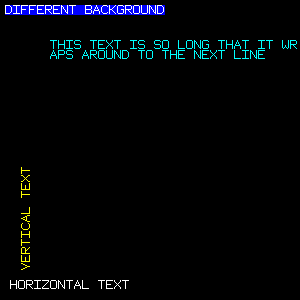
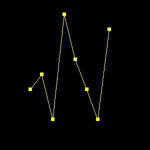
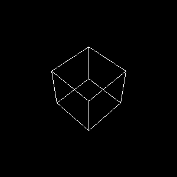
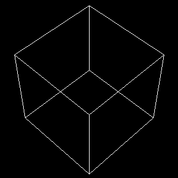

September 14, 1996
Disclaimer : This is pre-release software and this is the only documentation. Use at your own peril.
#include "gifplot.h"
int main(int argc, char **argv) {
FrameBuffer *f;
ColorMap *cm;
/* Create a framebuffer */
f = new_FrameBuffer(300,300);
/* Load a colormap */
cm = new_ColorMap(0);
/* Create a new 2D image */
FrameBuffer_clear(f,BLACK);
FrameBuffer_solidbox(f,50,50,250,250,BLUE);
FrameBuffer_drawstring(f,105,150,WHITE,BLUE,"HELLO WORLD",HORIZONTAL);
FrameBuffer_writeGIF(f,cm,"plot.gif");
}
To compile, simply do something like the following :
When you run the program "hello", it will generate a file "plot.gif" that looks like this :gcc hello.c -I/usr/local/include -L/usr/local/lib -lgifplot -o hello
That's about it. Now it's just a matter of knowing what functions are available and how to use them.
typedef struct FrameBuffer {
Pixel **pixels; /* 2D array of pixel values */
Zvalue **zbuffer; /* zbuffer. Used for 3D */
unsigned int height; /* height of the framebuffer (pixels) */
unsigned int width; /* width of framebuffer (pixels) */
int xmin; /* Clipping region */
int ymin;
int xmax;
int ymax;
} FrameBuffer;
Frames consists of 2D arrays of Pixels and z-values for 3D images.
The xmin,ymin,xmax,ymax parameters can be used to define
a viewport. (Graphics operations are clipped against the viewport).
FrameBuffer *new_FrameBuffer(unsigned int width, unsigned int height)
Creates a new framebuffer with the given dimensions. Returns a FrameBuffer object.
void *delete_FrameBuffer(FrameBuffer *f)
Destroys the given FrameBuffer.
int FrameBuffer_resize(FrameBuffer *f, int width, int height)
Resizes a framebuffer. Returns a -1 if the operation fails. Usually this will only happen if there isn't enough memory available for the operation.
void FrameBuffer_clear(FrameBuffer *f, Pixel color)
Clears the current framebuffer to the given color. This clears the entire FrameBuffer, regardless of whatever clipping parameters have been set.
void FrameBuffer_plot(FrameBuffer *f, int x, int y, Pixel color)
Plots a single pixel with the given color. If the pixel falls outside the clipping window, it is ignored.
void FrameBuffer_horizontal(FrameBuffer *f, int xmin, int xmax, int y, Pixel Color)
A high performance function for drawing a horizontal line on the screen of a given color. The endpoints will be clipped if necessary.
void FrameBuffer_horizontalinterp(FrameBuffer *f, int xmin, int xmax, int y,
Pixel c1, Pixel c2)
Draws a horizontal line on the screen, but performs a linear interpolation of color values between the two endpoints. This is used to draw colorbars and to perform generate smoothing effects.
void FrameBuffer_vertical(FrameBuffer *f, int ymin, int ymax, int x, Pixel color)
A high performance function for drawing vertical lines. Lines are clipped if necessary.
void FrameBuffer_line(FrameBuffer *f, int x1, int y1, int x2, int y2, Pixel color)
Draw a line between two points. Line endpoints will be clipped if necessary.
void FrameBuffer_box(FrameBuffer *f, int x1, int y1, int x2, int y2, Pixel color)
Draws an outlined box. (x1,y1) and (x2,y2) define two opposite corners of the box and may be specified in any order.
void FrameBuffer_solidbox(FrameBuffer *f, int x1, int y1, int x2, int y2,
Pixel color)
Draws a solid box. (x1,y1) and (x2,y2) define two opposite corners of the box.
void FrameBuffer_interpbox(FrameBuffer *f, int x1, int y1, int x2, int y2,
Pixel c1, Pixel c2, Pixel c3, Pixel c4)
Draws a box, but interpolates color values between values specified at the four corners. This is commonly used to produce smoothing effects. The color values are assigned as follows :
- (x1,y1) = color c1
- (x1,y2) = color c2
- (x2,y1) = color c3
- (x2,y2) = color c4
void FrameBuffer_circle(FrameBuffer *f, int x, int y, int radius, Pixel color)
Draws an outlined circle on the screen with center (x,y) and radius specified in pixels.
void FrameBuffer_solidcircle(FrameBuffer *f, int x, int y, int radius, Pixel color)
Draws a filled circle on the screen with center (x,y) and radius specified in pixels.
void FrameBuffer_setclip(FrameBuffer *f, int xmin, int ymin, int xmax, int ymax)
Sets a clipping region on the current viewport. Everything drawn will be clipped to fit inside this region.
void FrameBuffer_noclip(FrameBuffer *f)
Disable any clipping that might have been set.
void FrameBuffer_zclear(FrameBuffer *f)
Clears the zbuffer associated with a FrameBuffer (if any).
void FrameBuffer_drawchar(FrameBuffer *frame, int x, int y, int fgcolor,
int bgcolor, char chr, int orientation)
Draws a single character chr on the screen at location (x,y) and with the given foreground and background colors. orientation may be HORIZONTAL or VERTICAL..
void FrameBuffer_drawstring(FrameBuffer *frame, int x, int y, int fgcolor,
int bgcolor, char *string, int orientation)
Draws an ASCII character string on the screen starting at location (x,y) and with given foreground and background colors. orientation may be HORIZONTAL or VERTICAL . This function will wrap text to the next "line" if it is too long to fit on the current framebuffer. Carriage returns are also translated into line breaks. The following image shows what the different styles look like :

PixMap *new_PixMap(int width, int height, int centerx, int centery)
This creates a new pixel map with given width and height. The point (centerx, centery) defines the center point used when the the map is drawn on the screen. Returns a structure of type "PixMap".
void delete_PixMap(PixMap *p)
Destroys a PixMap.
void PixMap_set(PixMap *p, int x, int y, int value)
Sets point (x,y) in a pixel map. value is one of the following codes :By default, when a PixMap is created, all of the pixels are set to TRANSPARENT mode.
- FOREGROUND
- BACKGROUND
- TRANSPARENT
void FrameBuffer_drawpixmap(FrameBuffer *f, PixMap *pm, int x, int y,
int fgcolor, int bgcolor)
Draws a pixel map on the screen at location (x,y) with the given foregroundn and background colors. The following graph shows how a graph with PixMaps might look :
 In this image, a SQUARE PixMap has been used to mark points in the plotting of an array. The following PixMaps are already defined in the library :
- PixMap_SQUARE
- PixMAP_TRIANGLE
- PixMAP_CROSS
ColorMap *new_ColorMap(char *filename)
This creates a new colormap. If filename is non-NULL, the function will attempt to read the colormap from a file. If filename is NULL (or 0), this will create a new colormap and return a pointer to it. The first 16 colors in the colormap are reserved by the library and set to predefined values. The remaining 240 colors, can be set as necessary.ColorMap files are 768 bytes long and contain 8-bit values corresponding to the red, blue, and green components of each color. The file is organized as follows :
- Bytes 0-255. Red color components.
- Bytes 256-511. Blue color components.
- Bytes 512-767. Green color components.
This function returns NULL upon failure.
void delete_ColorMap(ColorMap *c)
Destroys a colormap.
void ColorMap_default(ColorMap *c)
This initializes the first 16 elements of a colormap to the default values expected by the library.
void ColorMap_assign(ColorMap *c, int index, int r, int g, int b)
This assigns new red,green,and blue components to a particular color index. For example, the following code would create a grey-scale colormap:c = new_ColorMap(0); for (i = 16; i < 256; i++) ColorMap_assign(c,i,i,i,i);
int ColorMap_write(ColorMap *c, char *filename)
Writes a colormap out to a file for later use. Returns -1 if an error occurred write writing the file.Default colors
The following common colors are defined and can be used by simply
supplying one of these symbols :
f = new_FrameBuffer(300,300);
cm = new_ColorMap("cm15");
/* Create a new 2D image */
FrameBuffer_clear(f,BLUE);
FrameBuffer_setclip(f,0,0,200,200);
FrameBuffer_solidbox(f,0,0,300,300,BLACK);
for (i = 0; i < 400; i++) {
x1 = rand() % 400;
y1 = rand() % 400;
x2 = rand() % 400;
y2 = rand() % 400;
c = rand() % 256;
FrameBuffer_line(f,x1,y1,x2,y2,c);
}
FrameBuffer_box(f,0,0,199,199,WHITE);
FrameBuffer_setclip(f,175,175,300,300);
FrameBuffer_solidbox(f,0,0,300,300,BLACK);
for (i = 0; i < 100; i++) {
x1 = rand() % 400;
y1 = rand() % 400;
x2 = rand() % 400;
y2 = rand() % 400;
c = rand() % 256;
FrameBuffer_box(f,x1,y1,x2,y2,c);
}
FrameBuffer_box(f,175,175,299,299,WHITE);
FrameBuffer_writeGIF(f,cm,"plot.gif");
This produces the following image, with two clipped regions :
int FrameBuffer_writeGIF(FrameBuffer *f, ColorMap *c, char *filename)
This writes a GIF image to the given filename. You need to specify both the frameBuffer and corresponding colormap. Returns -1 if a file error occurred or if no memory was available for the requested operation. Currently, there is an internal filesize limit of 512000 bytes. This should be sufficient for most GIF images. This limitation will be eliminated in future releases.
int FrameBuffer_makeGIF(FrameBuffer *f, ColorMap *c, void *buffer, int bufsize)
This creates a GIF image and saves it in a buffer supplied by the user. The buffer must be large enough to contain the entire image or an error will occur (the buffer size is specified using bufsize). Upon return, this function will return the size of the image in bytes or -1 if an error occurred. This function is primarily used to quickly create GIF images for transfer over socket connections and other situations where it may not be necessary to dump the image to a file first.
typedef struct Plot2D {
FrameBuffer *frame; /* Frame buffer are we using */
int view_xmin; /* Minimum coordinates of view region */
int view_ymin;
int view_xmax; /* Maximum coordinates of view region */
int view_ymax;
double xmin; /* Minimum coordinates of plot region */
double ymin;
double xmax; /* Maximum coordinates of plot region */
double ymax;
} Plot2D;
The parameters xmin,ymin,xmax,ymax contain the real-world
coordinates of the plot. The parameters view_xmin,view_ymin,view_xmax,
view_ymax contain the viewport coordinates of the image (in case
it only takes up part of the framebuffer).
Plot2D *new_Plot2D(FrameBuffer *f, double xmin, double ymin, double xmax, double ymax)
Creates a new 2D plot. Caller must specify the framebuffer to be used and the minimum and maximum coordinates of the plot (real-world coordinates). This returns a new Plot2D structure is successful or NULL if an error occurred.
void delete_Plot2D(Plot2D *p2)
Destroys a 2D plot.
Plot2D *Plot2D_copy(Plot2D *p2)
Returns a copy of all of the parameters of a given 2D plot in a new Plot2D structure.
void Plot2D_start(Plot2D *p2)
This function should be called before creating a new 2D image. It checks various parameters, make adjustments if necessary, and prepares the framebuffer for use (by setting up the clipping region among other things).
void Plot2D_clear(Plot2D *p2, Pixel color)
Clears the viewing region associated with a 2D plot to the given color. This only clears the view-region, not the entire framebuffer.
void Plot2D_plot(Plot2D *p2, double x, double y, Pixel color)
Plots a single pixel corresponding to the point (x,y). If the point falls outside the plotting range, it is ignored.
void Plot2D_line(Plot2D *p2, double x1, double y1, double x2, double y2, Pixel color)
Draws a line between (x1,y1) and (x2,y2). Points may be anywhere in space and will be clipped to fit into the viewing region (or ignored if the line falls completely outside the region).
void Plot2D_box(Plot2D *p2, double x1, double y1, double x2, double y2, Pixel color)
Draws an outlined box with opposite corners specified by the points (x1,y1) and (x2,y2).
void Plot2D_solidbox(Plot2D *p2, double x1, double y1, double x2, double y2, Pixel ccolor)
Draws a solid box with opposite corners specified by the points (x1,y1) and (x2,y2).
void Plot2D_interpbox(Plot2D *p2, double x1, double y1, double x2, double y2,
Pixel c1, Pixel c2, Pixel c3, Pixel c4)
Draws a box with linear interpolation of colors between the corner points. This is used to draw colorbars and to perform color smoothing operations. The colors are assigned as follows :
- (x1,y1) = color c1
- (x1,y2) = color c2
- (x2,y1) = color c3
- (x2,y2) = color c4
void Plot2D_circle(Plot2D *p2, double x, double y, double radius, Pixel color)
Draws an outlined circle at point (x,y) with the given radius.
void Plot2D_solidcircle(Plot2D *p2, double x, double y, double radius, Pixel color)
Draws an solid circle at point (x,y) with the given radius.
void Plot2D_drawpixmap(Plot2D *p2, PixMap *pm, double x, double y,
Pixel fgcolor, Pixel bgcolor)
Draws a pixel map at the given location with specified foreground and background colors. This is primarily used to put symbols on 2D plots.
void Plot2D_xaxis(Plot2D *p2, double x, double y, double xtick, int ticklength, Pixel color)
Draws an x-axis on the image with origin (x,y). Ticks are placed every xtick units and have a width of ticklength pixels.
void Plot2D_yaxis(Plot2D *p2, double x, double y, double ytick, int ticklength, Pixel color)
Draws an y-axis on the image with origin (x,y). Ticks are placed every ytick units and have a width of ticklength pixels.
void Plot2D_setview(Plot2D *p2, int vxmin, int vymin, int vxmax, int vymax)
Set the viewport for a 2D plot.
void Plot2D_setrange(Plot2D *p2, double xmin, double ymin, double xmax, double ymax)
Sets the plotting range of a 2D plot.
#include "gifplot.h"
#include <math.h>
int main(int argc, char **argv) {
FrameBuffer *f;
Plot2D *p2;
ColorMap *cm;
double x1,x2,y1,y2;
double dx;
f = new_FrameBuffer(600,600);
cm = new_ColorMap("cm15");
/* Create a new 2D image */
p2 = new_Plot2D(f,-6.3,-1.5,6.3,1.5);
/* Set viewing region in 2D plot */
Plot2D_setview(p2,50,50,550,550);
/* Now make a plot of the sin() function */
FrameBuffer_clear(f,BLACK);
FrameBuffer_noclip(f);
FrameBuffer_box(f,50,50,550,550,WHITE);
FrameBuffer_drawstring(f,290,555,YELLOW,BLACK,"sin(x)",HORIZONTAL);
Plot2D_start(p2); /* Always call this prior to making an image */
Plot2D_xaxis(p2,0,0,3.14159/4.0,4, WHITE);
Plot2D_yaxis(p2,0,0,0.25,4, WHITE);
x1 = -6.3;
y1 = sin(x1);
dx = 0.05;
while (x1 < 6.3) {
x2 = x1+dx;
y2 = sin(x2);
Plot2D_line(p2,x1,y1,x2,y2,YELLOW);
x1 = x2;
y1 = y2;
}
/* Make a GIF file */
FrameBuffer_writeGIF(f,cm,"plot.gif");
}
When executed, you will get the following image :
3D graphics is a complicated business---especially if you try to handle it in full generality. My approach is to try and simplify the setup and management of 3D graphs as much as possible. Thus, you will find the implementation here to be much different than that used in a system like OpenGL.
typedef struct Plot3D {
FrameBuffer *frame; /* Frame buffer being used */
int view_xmin; /* Viewing region */
int view_ymin;
int view_xmax;
int view_ymax;
double xmin; /* Bounding box */
double ymin;
double zmin;
double xmax;
double ymax;
double zmax;
double xcenter; /* Center point */
double ycenter;
double zcenter;
double fovy; /* Field of view */
double znear; /* near "clipping" plane */
double zfar; /* far "clipping" plane */
double lookatz; /* Where is the z-lookat point */
} Plot3D;
To create a new 3D image, use the following functions :
Plot3D *new_Plot3D(FrameBuffer *frame, double xmin, double ymin, double zmin,
double xmax, double ymax, double zmax)
Creates a new 3D image. The min and max ranges define a computational domain where the model being viewed is to be located. The center of this region will be taken to be the origin of all 3D plotting.
void delete_Plot3D(Plot3D *p3)
Destroy a 3D image
Plot3D *Plot3D_copy(Plot3D *p3)
Makes a copy of a 3D image structure.
The viewer is situated on the positive Z axis and always looks towards the origin (in the negative-z direction). The center of the object being viewed is translated so that the model is situated at the origin. The fov parameter defines a "field of view" angle for the viewer. This determines how much of the model you can see on the screen with a narrow field of view being an extreme close-up and a wide field of view producing a fish-eye type effect. The lookat parameter defines the distance between the viewer and the origin. znear and zfar define the distances from the viewer of near and close clipping planes for the perspective transformation. Normally, you don't need to set these, although you can if you want.
The following commands can be used to set the viewpoint
void Plot3D_lookat(Plot3D *p3, double zlookat)
This sets the distance between the viewer and the center of the model being viewer (the origin). This should be called before calling any of the perspective operations.
void Plot3D_perspective(Plot3D *p3, double fov, double znear, double zfar)
This sets up the perspective view. fov determines the field of view (in degrees). while znear and zfar set the near and far clipping planes.
void Plot3D_autoperspective(Plot3D *p3, double fovy)
This is a shorter version of perspective() that automatically tries to set the near and far clipping planes for you. fov sets the field of view (in degrees).The following sample draws a unit cube and shows how you can set up a view :
#include "gifplot.h"
int main(int argc, char **argv) {
FrameBuffer *f;
Plot3D *p3;
ColorMap *cm;
/* Create a framebuffer */
f = new_FrameBuffer(300,300);
/* Load a colormap */
cm = new_ColorMap(0);
/* Create a new 3D image */
FrameBuffer_clear(f,BLACK);
p3 = new_Plot3D(f,0,0,0,1,1,1);
Plot3D_lookat(p3,5);
Plot3D_autoperspective(p3,40);
Plot3D_start(p3);
Plot3D_clear(p3,BLACK);
Plot3D_line(p3,0,0,0,0,0,1,WHITE);
Plot3D_line(p3,0,1,0,0,1,1,WHITE);
Plot3D_line(p3,1,0,0,1,0,1,WHITE);
Plot3D_line(p3,1,1,0,1,1,1,WHITE);
Plot3D_line(p3,0,0,0,1,0,0,WHITE);
Plot3D_line(p3,0,0,1,1,0,1,WHITE);
Plot3D_line(p3,0,1,0,1,1,0,WHITE);
Plot3D_line(p3,0,1,1,1,1,1,WHITE);
Plot3D_line(p3,0,0,0,0,1,0,WHITE);
Plot3D_line(p3,1,0,0,1,1,0,WHITE);
Plot3D_line(p3,0,0,1,0,1,1,WHITE);
Plot3D_line(p3,1,0,1,1,1,1,WHITE);
/* Make a GIF file */
FrameBuffer_writeGIF(f,cm,"plot.gif");
}
This produces the following image file :
void Plot3D_rotx(Plot3D *p3, double deg)
void Plot3D_roty(Plot3D *p3, double deg)
void Plot3D_rotz(Plot3D *p3, double deg)
void Plot3D_rotr(Plot3D *p3, double deg)
void Plot3D_rotl(Plot3D *p3, double deg)
void Plot3D_rotu(Plot3D *p3, double deg)
void Plot3D_rotd(Plot3D *p3, double deg)
void Plot3D_rotc(Plot3D *p3, double deg)
These functions can rotate the model around its real X,Y,Z axis or relative to the viewer (right, left, up, down, or around the center point). Normally, they are used when the graphics are used interactively, but they can also be used when setting up a view. For example :Will produce the following :Plot3D_lookat(p3,5); Plot3D_autoperspective(p3,40); Plot3D_rotz(p3,45); Plot3D_rotr(p3,40); Plot3D_start(p3); Plot3D_clear(p3,BLACK); Plot3D_line(p3,0,0,0,0,0,1,WHITE); Plot3D_line(p3,0,1,0,0,1,1,WHITE); Plot3D_line(p3,1,0,0,1,0,1,WHITE); Plot3D_line(p3,1,1,0,1,1,1,WHITE); Plot3D_line(p3,0,0,0,1,0,0,WHITE); Plot3D_line(p3,0,0,1,1,0,1,WHITE); Plot3D_line(p3,0,1,0,1,1,0,WHITE); Plot3D_line(p3,0,1,1,1,1,1,WHITE); Plot3D_line(p3,0,0,0,0,1,0,WHITE); Plot3D_line(p3,1,0,0,1,1,0,WHITE); Plot3D_line(p3,0,0,1,0,1,1,WHITE); Plot3D_line(p3,1,0,1,1,1,1,WHITE);

void Plot3D_left(Plot3D *p3, double percent) void Plot3D_right(Plot3D *p3, double percent) void Plot3D_up(Plot3D *p3, double percent) void Plot3D_down(Plot3D *p3, double percent)
These shift the image around on the framebuffer. percent defines a distance in terms of percentage of the current view. A value of 50 corresponds to half a screen, while a value of 100 is a full screen. For example :Produces the previous image shifted to the right by half a screen :Plot3D_lookat(p3,5); Plot3D_autoperspective(p3,40); Plot3D_rotz(p3,45); Plot3D_rotr(p3,40); Plot3D_right(p3,50); Plot3D_start(p3); Plot3D_clear(p3,BLACK); ...
void Plot3D_center(Plot3D *p3, double cx, double cy)
This changes the center of an image to a specified point. The point (cx,cy) should be in the range 0-100 where the point (0,0) corresponds to the lower left corner, (50,50) the center of the screen, and (100,100) the upper right corner of the screen. This command is almost always issued from an interactive program to recenter an image with a high-degree of accuracy. For example :Produces the earlier image, but with the center of the screen now set to a point in the lower left corner of the original image.Plot3D_lookat(p3,5); Plot3D_autoperspective(p3,40); Plot3D_rotz(p3,45); Plot3D_rotr(p3,40); Plot3D_center(p3,25,25); Plot3D_start(p3); Plot3D_clear(p3,BLACK); ...
void Plot3D_zoom(Plot3D *p3, percent)
This zooms an image in or out by a given percent. The command works like a copy-machine. A percent of 100 keeps the image the same size. A percent of 200 doubles the size of the image, while a percent of 50 cuts the image size in half. For example :Plot3D_lookat(p3,5); Plot3D_autoperspective(p3,40); Plot3D_rotz(p3,45); Plot3D_rotr(p3,40); Plot3D_zoom(p3,200); Plot3D_start(p3); Plot3D_clear(p3,BLACK); ...

void Plot3D_start(Plot3D *p3)
This should be called before starting to make a new 3D image. It sets up various parameters and makes sure everything is set up right before proceeding.
void Plot3D_clear(Plot3D *p3, Pixel color)
Clears the viewing region assigned to a 3D image.
void Plot3D_plot(Plot3D *p3, double x, double y, double z, Pixel color)
Plots a single point in 3D.
void Plot3D_line(Plot3D *p3, double x1, double y1, double z1,
double x2, double y2, double z2, Pixel color)
Draws a line between two arbitrary points (x1,y1,z1) and (x2,y2,z2).
void Plot3D_triangle(Plot3D *p3, double x1, double y1, double z1,
double x2, double y2, double z2,
double x3, double y3, double z3, Pixel color)
This draws an outlined 3D triangle given three points. This can be used to generate wire-frame type plots.
void Plot3D_solidtriangle(Plot3D *p3, double x1, double y1, double z1,
double x2, double y2, double z2,
double x3, double y3, double z3, Pixel color)
This generates a solid 3D triangle given three points.
void Plot3D_interptriangle(Plot3D *p3, double x1, double y1, double z1, Pixel c1,
double x2, double y2, double z2, Pixel c2,
double x3, double y3, double z3, Pixel c3)
This produces a filled triangle with color values that are interpolated between the three points. This is used to produce smoothing effects and pseudo-lighting effects.
void Plot3D_quad(Plot3D *p3,
double x1, double y1, double z1,
double x2, double y2, double z2,
double x3, double y3, double z3,
double x4, double y4, double z4, Pixel color)
Make a 3D outlined "quadralateral" from four points. Primarily used to make 3D plots from data on rectangular meshes.
void Plot3D_solidquad(Plot3D *p3,
double x1, double y1, double z1,
double x2, double y2, double z2,
double x3, double y3, double z3,
double x4, double y4, double z4, Pixel color)
Make a 3D solid "quadralateral" from four points. Primarily used to make 3D plots from data on rectangular meshes.
void Plot3D_interpquad(Plot3D *p3,
double x1, double y1, double z1, Pixel c1,
double x2, double y2, double z2, Pixel c2,
double x3, double y3, double z3, Pixel c3,
double x4, double y4, double z4, Pixel c4)
Make a 3D quadralateral from four points and perform color interpolation. This is used for smoothing effects.
void Plot3D_outlinesphere(Plot3D *p3, double x, double y, double z, double radius,
Pixel c, Pixel bc);
Make an outlined sphere at point (x,y,z) with given radius. c is the primary sphere color while bc is the boundary color (the outline color).
void Plot3D_solidsphere(Plot3D *p3, double x, double y, double z, double radius,
Pixel c)
Make a solid sphere at point (x,y,z) with given radius and color.
void Plot3D_setview(Plot3D *p3, int vxmin, int vymin, int vxmax, int vymax)
Set the viewing region for the plot.
#include "gifplot.h"
#include <math.h>
double func(double x, double y) {
double r;
double f;
r = sqrt(x*x + y*y);
f = (sin(0.30*r*x)+cos(0.30*r*y))/(1.0+r);
return f;
}
int main(int argc, char **argv) {
FrameBuffer *f;
Plot3D *p3;
ColorMap *cm;
double x,y;
double dx,dy;
double z1,z2,z3,z4;
f = new_FrameBuffer(600,600);
cm = new_ColorMap("cm15");
p3 = new_Plot3D(f,-6.3,-6.3,-1.5,6.3,6.3,1.5);
Plot3D_setview(p3,50,50,550,550);
Plot3D_lookat(p3,20);
Plot3D_autoperspective(p3,40);
/* Now make a plot of a 3D function */
FrameBuffer_clear(f,BLACK);
FrameBuffer_noclip(f);
FrameBuffer_box(f,49,49,550,550,WHITE);
Plot3D_start(p3); /* Always call this prior to making an image */
Plot3D_clear(p3,BLACK);
Plot3D_rotu(p3,60);
Plot3D_rotz(p3,40);
x = -6.3;
dx = 0.25;
while (x < 6.3) {
y = -6.3;
dy = 0.25;
while (y < 6.3) {
z1 = func(x,y);
z2 = func(x+dx,y);
z3 = func(x+dx,y+dy);
z4 = func(x,y+dy);
Plot3D_quad(p3,x,y,z1,x+dx,y,z2,x+dx,y+dy,z3,x,y+dy,z4,YELLOW);
y = y + dy;
}
x = x + dx;
}
/* Make a GIF file */
FrameBuffer_writeGIF(f,cm,"plot.gif");
}
Here is a plot using Plot3D_solidquad()
Finally, here is a plot using Plot3D_interpquad()
GIFPlot 0.0 Dave Beazley Department of Computer Science Theoretical Division (T-11) University of Utah Los Alamos National Laboratory Salt Lake City, Utah 84112 Los Alamos, New Mexico 87545 beazley@cs.utah.edu beazley@lanl.gov Copyright (c) 1996 The Regents of the University of California and the University of Utah All Rights Reserved Permission is hereby granted, without written agreement and without license or royalty fees, to use, copy, modify, and distribute this software and its documentation for any purpose, provided that (1) The above copyright notice and the following two paragraphs appear in all copies of the source code and (2) redistributions including binaries reproduces these notices in the supporting documentation. Substantial modifications to this software may be copyrighted by their authors and need not follow the licensing terms described here, provided that the new terms are clearly indicated in all files where they apply. IN NO EVENT SHALL THE AUTHOR, THE UNIVERSITY OF CALIFORNIA, THE UNIVERSITY OF UTAH OR DISTRIBUTORS OF THIS SOFTWARE BE LIABLE TO ANY PARTY FOR DIRECT, INDIRECT, SPECIAL, INCIDENTAL, OR CONSEQUENTIAL DAMAGES ARISING OUT OF THE USE OF THIS SOFTWARE AND ITS DOCUMENTATION, EVEN IF THE AUTHORS OR ANY OF THE ABOVE PARTIES HAVE BEEN ADVISED OF THE POSSIBILITY OF SUCH DAMAGE. THE AUTHOR, THE UNIVERSITY OF CALIFORNIA, AND THE UNIVERSITY OF UTAH SPECIFICALLY DISCLAIM ANY WARRANTIES,INCLUDING, BUT NOT LIMITED TO, THE IMPLIED WARRANTIES OF MERCHANTABILITY AND FITNESS FOR A PARTICULAR PURPOSE. THE SOFTWARE PROVIDED HEREUNDER IS ON AN "AS IS" BASIS, AND THE AUTHORS AND DISTRIBUTORS HAVE NO OBLIGATION TO PROVIDE MAINTENANCE, SUPPORT, UPDATES, ENHANCEMENTS, OR MODIFICATIONS.The GIF encoding algorithm is used under the following copyright.
/***************************************************************** * Portions of this code Copyright (C) 1989 by Michael Mauldin. * Permission is granted to use this file in whole or in * part for any purpose, educational, recreational or commercial, * provided that this copyright notice is retained unchanged. * This software is available to all free of charge by anonymous * FTP and in the UUNET archives. * * * Authors: Michael Mauldin (mlm@cs.cmu.edu) * David Rowley (mgardi@watdcsu.waterloo.edu) * * Based on: compress.c - File compression ala IEEE Computer, June 1984. * * Spencer W. Thomas (decvax!harpo!utah-cs!utah-gr!thomas) * Jim McKie (decvax!mcvax!jim) * Steve Davies (decvax!vax135!petsd!peora!srd) * Ken Turkowski (decvax!decwrl!turtlevax!ken) * James A. Woods (decvax!ihnp4!ames!jaw) * Joe Orost (decvax!vax135!petsd!joe) *****************************************************************/